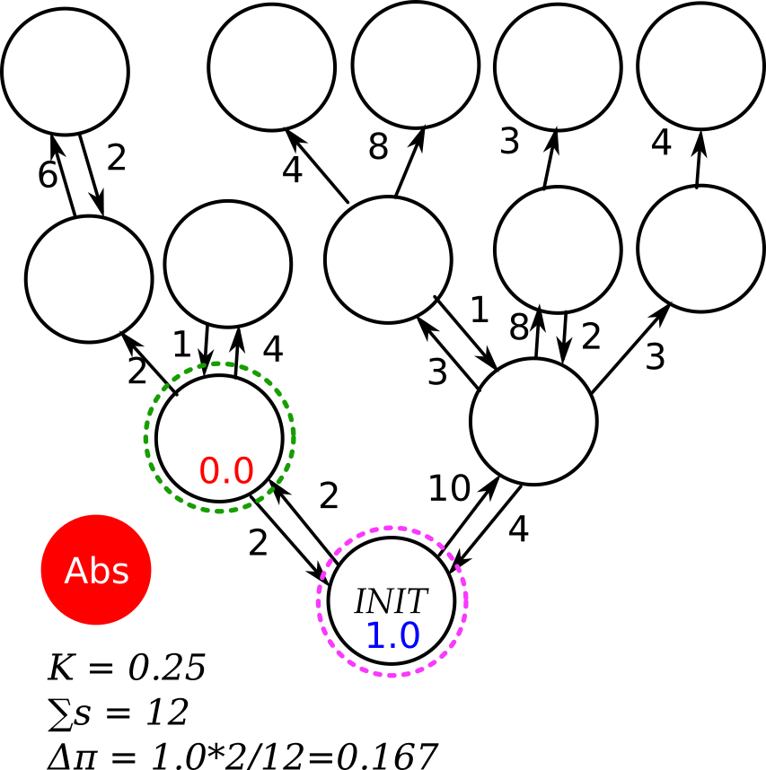

Previous
Next

Step 2
For each next state, reachability is assumed to start at 0.
We add path probabilities to reachability.
If the path probability is less than kappa, that state is not explored.
Back to Wiki